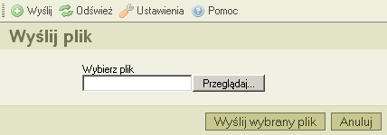

Przycisk wyślij* umieszczony w pasku narzędzi, otwiera okno do wysyłania plików, które służy do dodawania nowych plików do otwartego w danym momencie katalogu. Poniżej przykładowy zrzut ekranu:

W celu zamknięcia okna, kliknij na przycisk "Anuluj" albo kliknij ponownie przycisk "Wyślij" w pasku narzędzi.
* "wysyłanie" pliku to inaczej transfer pliku z Twojego komputera (lokalnego) do komputera centralnego, na którym uruchomiony jest CKFinder (serwera).
Nstępujące komunikaty mogą zostać wyświetlone po wysłaniu pliku:
Oznacza to, że plik o danej nazwie już istnieje w danym katalogu. W celu uniknięcia konfliktu, kolejny numer porządkowy został dodany do oryginalnej nazwy pliku "(1)".
Wysłany plik nie został zaakceptowany.
Najczęstszym powodem, jest takie skonfigurowanie CKFindera przez administratora, aby zezwalać na pliki tylko z wybranymi rozszerzeniami. Rozwiązanie to ma na celu zabezpieczenie serwera przed wysłaniem niedozwolonych plików. Innym powodem może być przekroczenie dozwolonego rozmiaru pliku wysłanego na serwer. W takim wypadku, serwer powinien zostać tak skonfigurowany przez administratora, aby dopuszczał pliki o większych rozmiarach.
Przesłany plik zawiera kod HTML. Z powodów bezpieczeństwa, tylko pliki z wybranymi rozszerzeniami mogą zawierać kod HTML.
Prosimy o kontakt z administratorem w celu uzyskania informacji plików, które są akceptowane przez CKFindera oraz dopuszczalnego limitu rozmiaru pojedynczego pliku.